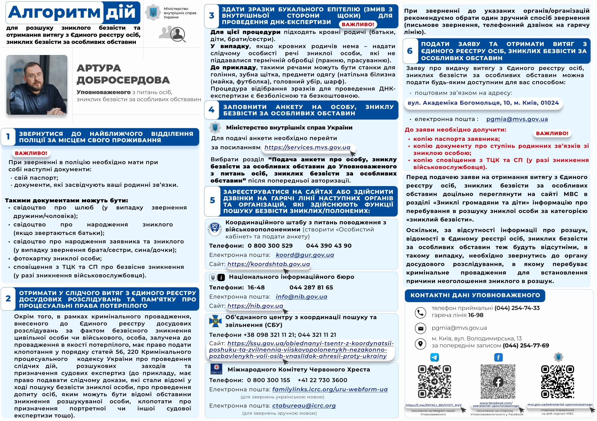

1. Алгоритм дій після сповіщення про зниклого безвісти
Крок за кроком інструкція для родин, які отримали повідомлення про зникнення близької людини.

Нижче зазначено посилання, які вам знадобляться на певних етапах алгоритму дій:
2. Заяви для забезпечення сім'ї
1. Заява у військову частину, для подання на комісію, щоб отримати статус Учасника бойових дій.
Дії після отримання статусу УБД зниклому безвісти:
2. Після отримання статусу УБД, звернутися до ЦНАП, для отримання витягу з єдиного реєстру ветеранів війни.
3. З отриманим витягом ветерана війни, звернутися в пенсійний фонд для оформлення пільг.
Шаблони (натисніть, щоб завантажити):
3. Зразки клопотання до слідчого
Шаблони клопотань (натисніть, щоб завантажити):
4. Здача ДНК-тесту
Здача ДНК-тесту рідними осіб, зниклих безвісти або загиблих внаслідок збройної агресії РФ, за кордоном
Для родичів, які тимчасово перебувають або постійно проживають за кордоном, доступні два механізми здачі біологічних зразків для ідентифікації осіб, зниклих безвісти:
Здача біологічних зразків у філіях державного підприємства «Документ» за кордоном
22.05.2024 між державним підприємством «Документ», що належить до сфери управління Державної міграційної служби України (ДП «Документ»), Національною поліцією України та Міжнародною комісією з питань зниклих безвісти (ІСМP) укладено меморандум про співпрацю.
Основна мета: забезпечити можливість громадянам України, які знаходяться за кордоном та розшукують осіб, зниклих безвісти, добровільно надати біологічні зразки та інші дані.
Розташування філій:
- Польща: Варшава, Гданськ, Краків, Вроцлав.
- Чехія: Прага.
- Словаччина: Братислава.
- Туреччина: Стамбул.
- Німеччина: Берлін, Кельн, Мюнхен.
- Іспанія: Валенсія, Мадрид, Барселона.
- Італія: Мілан.
Процедура здачі:
- Родич прибуває до філії.
- Складає заяву про розшук зниклої особи.
- Підписує документи про згоду на відбір біологічного матеріалу та обробку персональних даних.
- Здає біологічний зразок (букальний епітелій).
Біологічний матеріал упаковується та надсилається до України для проведення експертизи.
Важливо:
- Заяву можуть внести до ЄРДР (якщо провадження не відкрито).
- Або долучити до наявного кримінального провадження.
Контакти ДП «Документ»:
Call-центр: +38 (044) 597 8777
Сайт: https://pasport.org.ua/centers
5. #Полон
Якщо у вас є фото чи відео підтвердження полону, але цей факт не підтверджено офіційно російською стороною — обов’язково звертайтесь до Міжнародного Комітету Червоного Хреста (МКЧХ).
- Надішліть фото або відео, які маєте
- Обов’язково вкажіть ПІБ та дату народження полоненого
- Дублюйте звернення, якщо вже відправляли раніше
Пишіть на електронну пошту: KYI_tracing_services@icrc.org

Листування з полоненими
В умовах повномасштабної війни можливість листування з близькими є надважливою для полонених військовослужбовців.
Листування передбачено ІІІ Женевською конвенцією про поводження з військовополоненими, якою встановлені певні правила листування.
У листах не допускається наявність політичної інформації, будь-яких оцінок військовим діям, а також будь-яка інформація, яка може нашкодити полоненому.
Дозволено — сімейні новини, дитячі малюнки, слова підтримки полоненому.
Заборонено у листах повідомляти місце проживання, номери телефонів, електронні адреси, інші дані, які можуть бути використані для ідентифікації осіб.
Листування здійснює Національне інформаційне бюро (НІБ) та допомагає за посередництва Міжнародного Комітету Червоного Хреста військовополоненим та їх родинам налагодити зв'язок.
НАДВАЖЛИВО правильно оформити та запакувати конверт.
ДИВИСЬ ЗРАЗОК 👇
Одержувач (для зазначення на зовнішньому конверті)
- при направленні листа Укрпоштою: ДП «Український національний центр розбудови миру» - 01133, м. Київ, Євгена Коновальця, 36Б (зазначивши на конверті «СЛУЖБА ВІЙСЬКОВОПОЛОНЕНИХ»)

Національне інформаційне бюро (НІБ) спільно з МКЧХ передали понад 12,5 тисяч листів між українськими військовополоненими та їхніми рідними.
- Понад 2,8 тис. листів — від полонених до рідних
- Понад 9,7 тис. листів — від рідних до полонених
Це листування гарантується ст. 71 Женевської конвенції про поводження з військовополоненими.
Правила написання розроблені НІБ при Мінреінтеграції. Детальніше: nib.gov.ua
Доставку листів забезпечує МКЧХ, а послуги безкоштовно надає «Нова пошта» у межах програми «Гуманітарна пошта України».

6. Поради після звільнення з полону
Повернення рідної людини з полону — це радісна подія, але водночас дуже делікатний і складний період для всієї родини. Колишній полонений пережив тяжкі випробування, тому найважливішим зараз для нього є відчуття спокою, безпеки і тиші. Ваша підтримка має бути делікатною, щоб не нашкодити, а допомогти відновитися.
1. Створіть атмосферу тиші та спокою
- Забезпечте домашній простір, де людина може почуватися у безпеці і не відчувати зайвого шуму чи стресу.
- Уникайте гучних розмов, сварок і конфліктних ситуацій у присутності близької.
- Дозвольте їй бути в тиші, не змушуйте розмовляти чи пояснювати свій досвід, якщо вона не готова.
2. Терпіння і повага до особистих меж
- Кожен переживає травму по-своєму, і потрібен час, щоб адаптуватися.
- Не наполягайте на розповідях про полон, не задавайте багато питань.
- Повага до особистого простору і емоційних меж — основа підтримки.
3. Емоційна підтримка без тиску
- Слухайте, якщо близька людина хоче говорити, але не примушуйте.
- Показуйте, що ви поруч і готові допомогти у будь-який момент.
- Допомагайте відчувати, що її почуття важливі і прийняті.
4. Спокійні та поступові зміни
- Не вимагайте швидких змін чи повернення до колишнього ритму життя.
- Підтримуйте повільне повернення до звичних справ, без навантажень.
- Заохочуйте до простих і спокійних активностей, які допомагають розслабитися.
5. Турбота про здоров’я — фізичне і психологічне
- Підтримуйте регулярний режим дня, достатній сон і правильне харчування.
- Допомагайте організувати зустрічі з медичними і психологічними спеціалістами.
- Тиша і спокій — важливі складові одужання.
6. Піклуйтеся про себе
- Підтримка близької — це велике емоційне навантаження, тому не забувайте про власний відпочинок.
- Звертайтеся по допомогу, якщо почуваєте втому або розгубленість.
- Ваша внутрішня рівновага допоможе бути надійною опорою для рідної людини.